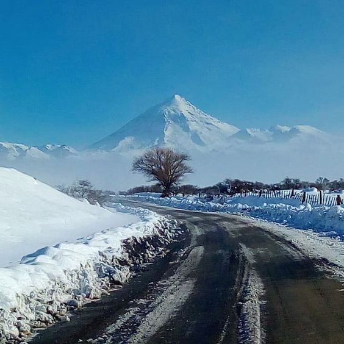

ECOSISTEMA
El majestuoso volcán Lanín, que se alza a unos 3.776 metros en la cordillera de los Andes, domina desde ciertos sectores el Parque Nacional que lleva su nombre. Este se encuentra ubicado en las ecorregiones del Bosque Patagónico, Altos Andes y la Estepa Patagónica. Un rosario de veinticuatro espléndidos lagos glaciarios, ríos, saltos y cascadas, como Chachín, se encuentran en sus límites.

CLIMA
Templado húmedo (a excepción de la zona altoandina, sujeta al régimen de nieves). Las temperaturas medias van desde los 4°C en invierno a los 20°C en verano. Las precipitaciones promedian los 1.800 mm anuales, aunque en ciertas áreas cordilleranas superan los 4.000 (por ejemplo, Queñi y Quillén-Añihuaraqui). Las lluvias se concentran de mayo a agosto, con picos en junio y las nevadas, de mayo a octubre. Se recomienda visitar a fines de primavera, verano y principios de otoño (noviembre-abril).
FLORA
Conserva un muestrario botánico importante en la regulación hídrica del norte patagónico. Entre las plantas, varias hierbas y arbustos son endémicos. Además, hay bosques de pehuén, roble pellín y raulí. Las majestuosas elevaciones de la cordillera presentan cumbres nevadas y sus laderas cubiertas de densos bosques de Nothofagus. En las zonas menos elevadas de Hua Hum ingresa desde el oeste, exuberante, la selva valdiviana.

FAUNA
La fauna del área protegida abarca 233 especies de vertebrados nativos. Pumas, zorros y un marsupial, el monito de monte, se encuentran entre los mamíferos; mientras que el churrín grande, el cóndor, el aguilucho cola rojiza y el fío fío silbón son representantes entre las aves.